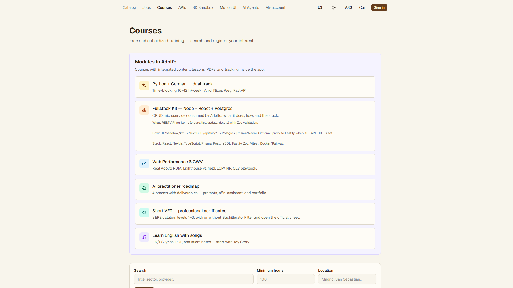
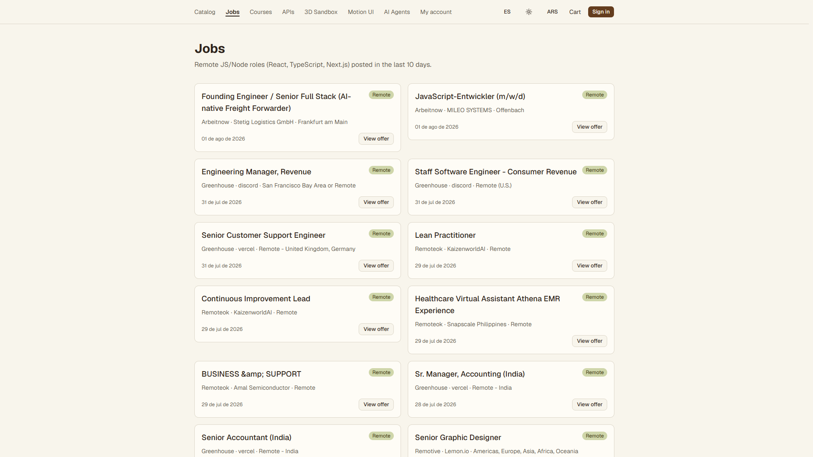
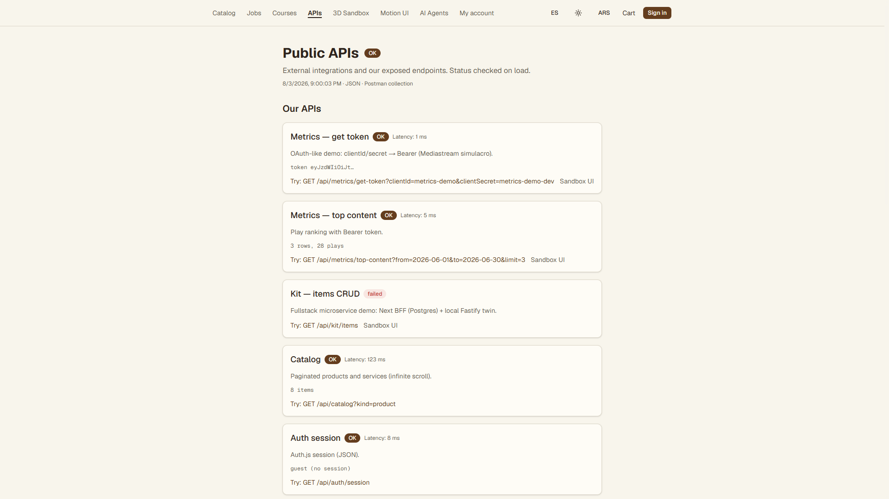
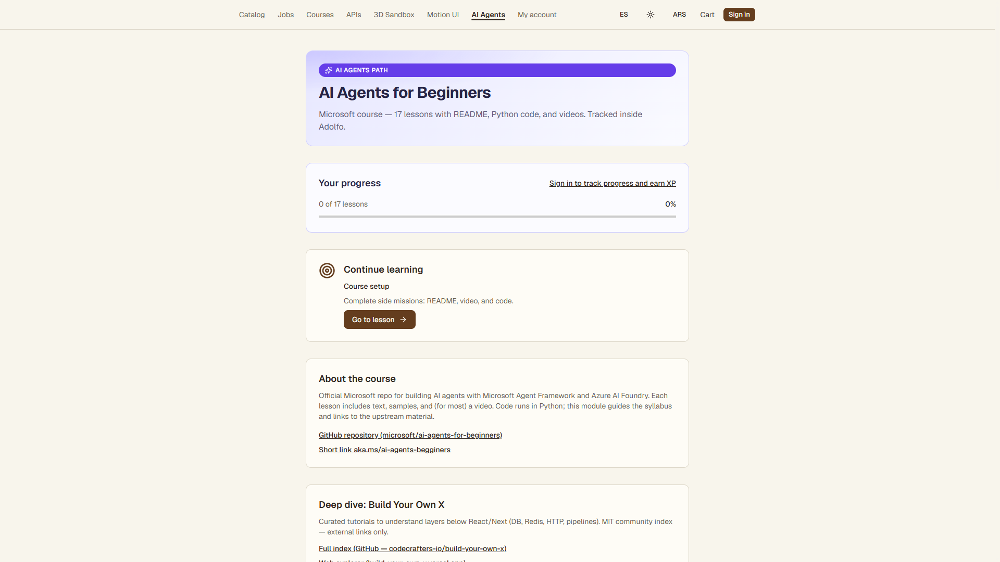

Live product portfolio — commerce, jobs ingest, courses, public APIs
https://adolfo-nine.vercel.appProduction app on Vercel + Neon: Auth.js, catalog/cart, remote jobs ingest (Remotive / Greenhouse / etc.), learning modules with progress, and live public API probes (metrics OAuth-like demo, catalog, demo upstreams). Built as a shippable product, not a static mock.



